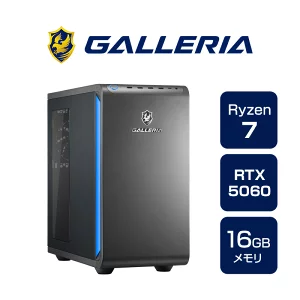

VALORANTをフルHD・200FPS以上で安定してプレイしたい人必見！
「VALORANTで勝ちたい！でもゲーミングPCの選び方がわからない…」そんなお悩みはありませんか？
コンマ1秒を争うタクティカルFPSにおいて、滑らかな映像は勝敗を大きく分ける重要な要素です。この記事では、初心者の方にもわかりやすく専門用語を解説しながら、フルHD・200FPS以上で安定してプレイできるおすすめのゲーミングPCをご紹介します！
これだけは知っておきたい！初心者向け・基本用語解説
- FPS（フレームレート）：1秒間に画面が何回書き換わるかを示す数値です。この数値が高いほど映像が滑らかに動き、敵を視認しやすくなります。VALORANTで勝ちたいなら200FPS以上が理想です。
- フルHD（FHD / 1080p）：画面の解像度（きめ細やかさ）のこと。現在最も標準的な画質で、PCへの負担を抑えつつ綺麗な映像を楽しめるため、FPSゲームに最適です。
- CPU：パソコンの「脳」にあたるパーツ。ゲーム中の複雑な計算を行います。
- GPU（グラフィックボード/グラボ）：映像をディスプレイに出力するためのパーツ。ゲームの快適さ・FPSの高さはここでほぼ決まります。
おすすめゲーミングPC：GALLERIA XGR7M-R56-GD

VALORANTは比較的動作が軽めのゲームです。そのため、CPUの「Ryzen 7 5700X」は少し前の世代のモデルですが、グラフィックボードの「RTX 5060」と組み合わせることで、フルHD環境なら最高設定でも300FPS以上を安定して出すことができます。
これを買えば快適にプレイできることは間違いありません。さらに、4K解像度の最高設定でも200FPS以上が出るほどの余裕があります。
※ただ、他の用途（重いゲームや動画編集など）にも使うなら、もうちょっと余裕を持たせたスペックのものを選ぶのもおすすめです。
楽天市場で購入まとめ
VALORANTで上位を目指すなら、200FPS以上が安定して出せる環境は非常に強力な武器になります。今回紹介した「GALLERIA XGR7M-R56-GD」は、VALORANTを快適にプレイしたい方に間違いなくおすすめできる一台です。